Logisim使用指导
学习软件开发，你可能第一时间想到的是：C 语言、Java、Python、数据结构、前端后端、算法等等，没错，这些技术都是软件开发的关键技术，这些将来大家都会学习。然而，想成为一名优秀的软件工程师，仅仅掌握软件方面的知识， 是完全不够的。
如果我们把一台计算机必做一个人，那么硬件就是它的肉体，软件就是它的灵 魂；更进一步讲，CPU（中央处理器）是硬件中最重要的组成部分，是计算机的心 脏（或者说大脑）；操作系统是软件中最重要最基本的组成部分，是计算机的"人 格"。软件和硬件谁也离不开谁，如果想要学好软件开发，首先就需要对计算机的 硬件，尤其是 CPU 有一个深刻的了解，我们这门课程开设的目的就是如此，希望大家能真正了解 CPU的工作原理，在硬件层面对程序的运行有一个基本的理解。
上面对 CPU 的介绍还是有点抽象，CPU 究竟是怎么运作的？这里简单介绍一 下：举个最简单的例子，我写了一段 C 代码，现在要把它编译成程序并运行，这个过程是什么样的？计算机肯定是不理解你写的这些东西：
#include<stdio.h>
int main()
{
int a,b,c;
a=1;
b=2;
c=a+b;
return 0;
}但是编译器理解，它会把这些高级语言代码翻译成汇编语言代码，大概长这个样子：
li $t0,1//把1赋值给t0寄存器
li $t1,2//把2赋值给t1寄存器
add $t3,$t0,$t1//把t1寄存器和t2寄存器的值相加然后赋值给t3寄存器可以看出，每一条汇编语言代码都是一个比较基本的，面向硬件的操作指令，针对我们即将学习的 MIPS-lite2 指令集，每一条汇编语言代码都对应一段 32 位等长机器码（说白了就是一个 32 位的 0、1 串），把这个机器码传给 CPU，这时候它就理解自己需要做什么了，就可以执行一条指令。所有的指令执行完毕后，你的 程序也就执行完毕了。
简单来讲，CPU就是一个执行汇编语言指令的东西。
而我们即将学习的Logisim就是用来模拟CPU运行的一个工具，可以用它画出电路图并在上面模拟运行。
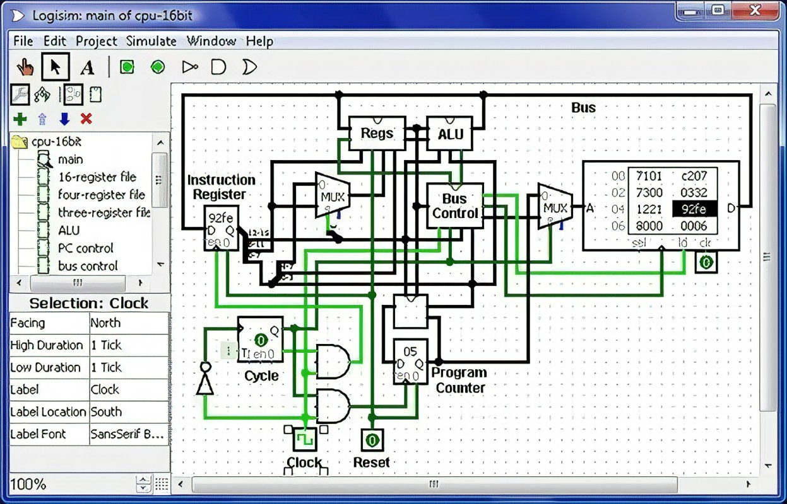
获取Logisim
Logisim 需要 java 环境的支持，大家需要安装 JDK15.0.2 的版本。
大家可以在官网上下载 java，你也可以选择其它网站： https://www.oracle.com/java/technologies/javase/jdk15-archive-downloads.html
下载完毕后，请参照教程完成 java 环境的安装，这里推荐这个教程，你也可 以参照其他教程:{.uri}
如果配置成功，打开命令提示符窗口，输入 java -version 并按下回车，将会看 到如图 2所示的情景。
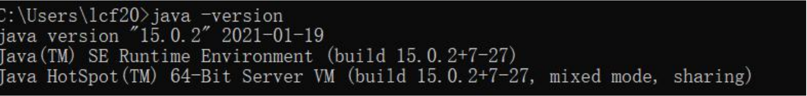
接下来就可以安装使用Logisim了,通过下方链接下载并查看使用文档，在后续还会对Logisim的主要用法和功能在指导书中进行介绍，建议在遇到问题时勤查指导书，实在无法解决的问题再询问助教。
Logisim下载地址：https://sourceforge.net/projects/circuit/
Logisim官网：http://www.cburch.com/logisim/
Logisim官方指导文档（英文）：
http://www.cburch.com/logisim/docs/2.7/en/html/guide/tutorial/index.html
http://www.cburch.com/logisim/docs/2.7/en/html/guide/index.html
http://www.cburch.com/logisim/docs/2.7/en/html/libs/index.html
Logisim 中文指导手册（强烈建议在开始实验之前阅读一下，掌握 Logisim 基 本元件的使用）: http://www.doc88.com/p-1466403426738.html
Logisim基础功能使用指南
本章节主要帮助大家快速熟悉logisim的操作界面，方便大家进行实验，如果大家已经熟练掌握logisim文件的编辑的话就可以跳过这部分。请同学们谨记如果在实验过程中遇见Logisim的使用上的困难还是建议查看上个章节提到的指导手册～
首先，我们打开logisim会看到一个如下界面。现在我们依次来简要介绍一些图标对应的基本功能。
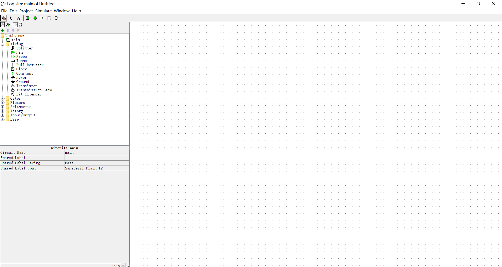
菜单栏操作介绍
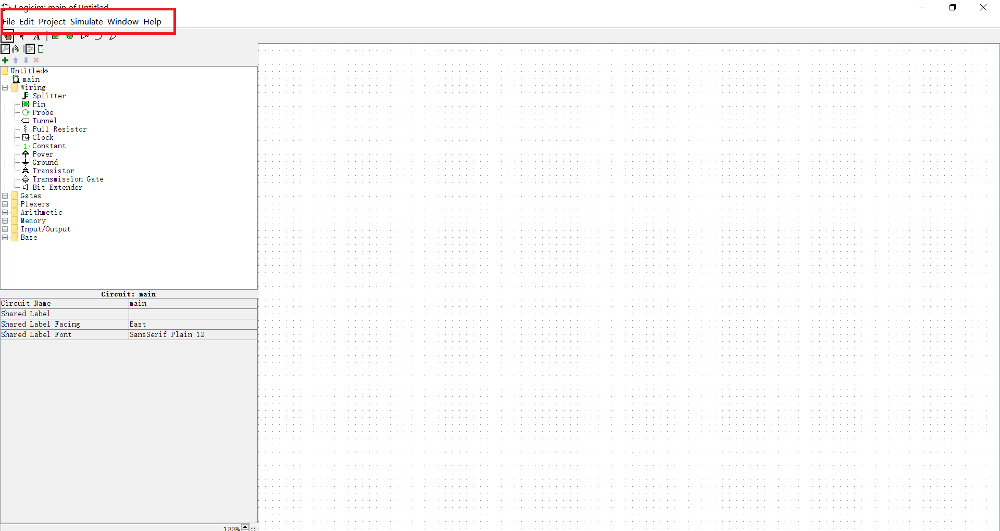
在File菜单下我们可以新建、打开或保存用logisim编辑的.circ文件；
在Edit菜单下我们可以对画布(图中右半部分占据面积最大的白色框)中选中的组件进行相应操作，不过个人认为使用对应的快捷键操作更方便；
在Project菜单下我们可以进行对选中的电路的编辑操作、新建电路或者导入外部库；
在Help菜单下，我们重点需要关注library reference,在这里我们可以查看到资源库中每一个元件的使用说明。建议大家在遇到不确定元件的使用方式时在这里阅读一下对应的说明；在tutorial和user's guide中会有一些关于logisim使用的详细介绍，大家遇到操作上的疑惑也可以在此查看。
我们在实验中常用的功能如上，在 之前提到的Logisim用户手册中2.6节还有对菜单栏更详细的介绍，感兴趣的同学可以再参考一下。
工具栏操作介绍
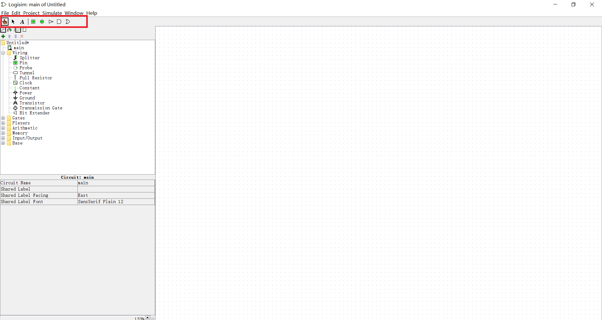
我们先来介绍 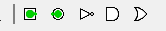｜ 右边的这些标签：
对于上方这个戳工具，我们可以用来调试电路。两种使用方式如下：
当我们在工具栏中选中这个按键时，在画布中点击输入控件可以改变对应输入的值。通过观察输入改变后输出值的变化是否符合预期，我们可以检测电路是否正确。
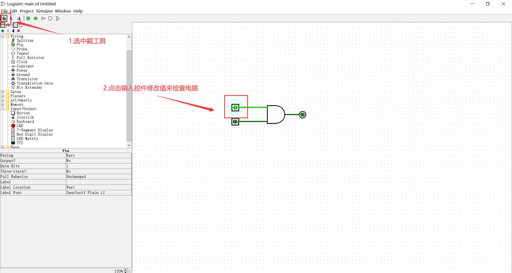
当我们想要查看一个子电路时，选中戳工具，单击想要查看的子电路，当该电路上出现放大镜图标时双击即可跳转到该子电路中查看细节。
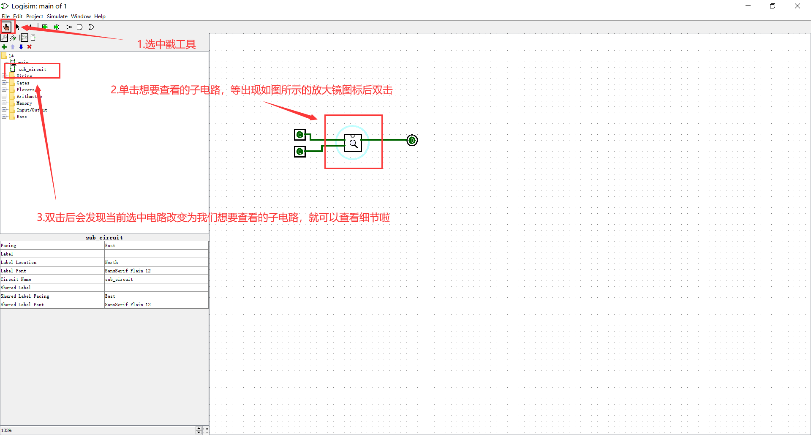
当上方对应的编辑工具被选中时，我们可以拖动画布中的元件调整位置或画导线。
当上方对应的文本工具被选中时，我们可以在画布中添加文本(几乎不会用到)。
资源面板介绍
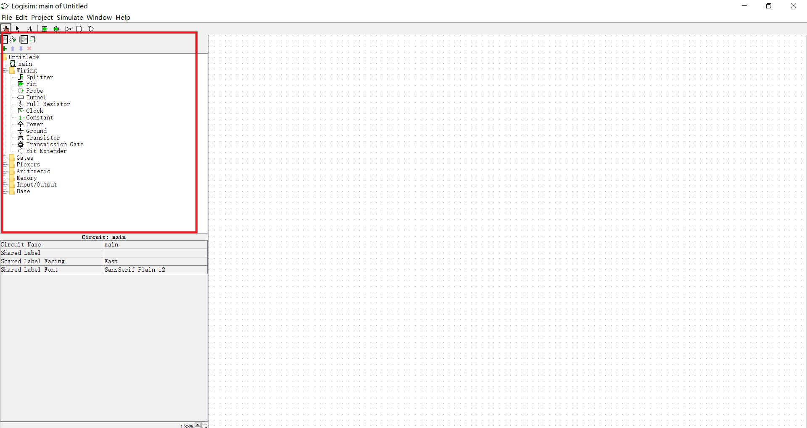
接下来我们以流水线CPU为例来介绍，方便大家更直观地看到不同按键对应的功能。
上方的两个图标可以用来切换画布中展示选中电路的外观还是内部细节。
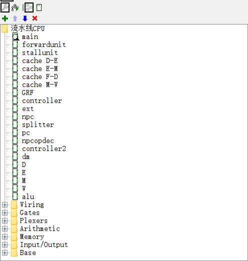
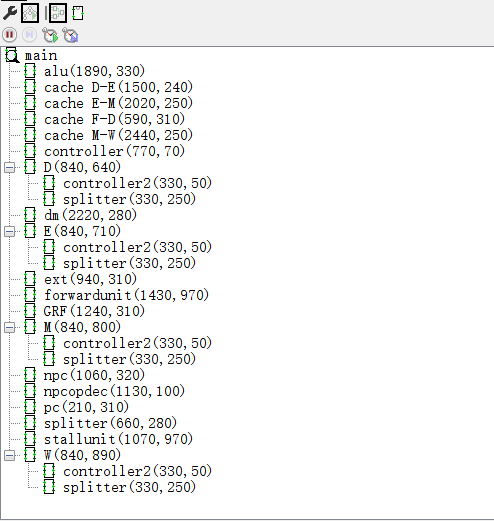
在上方左图中，各个电路以罗列的方式展示；在上方右图中，会根据电路的调用关系以树形方式展示，我们可以据此查看各个电路之间的调用关系。
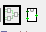
上方中的两个图标可以用来切换画布中展示选中电路的外观还是内部细节。
以ALU组件为例，我们可以看到画布中展示的内容有所不同。
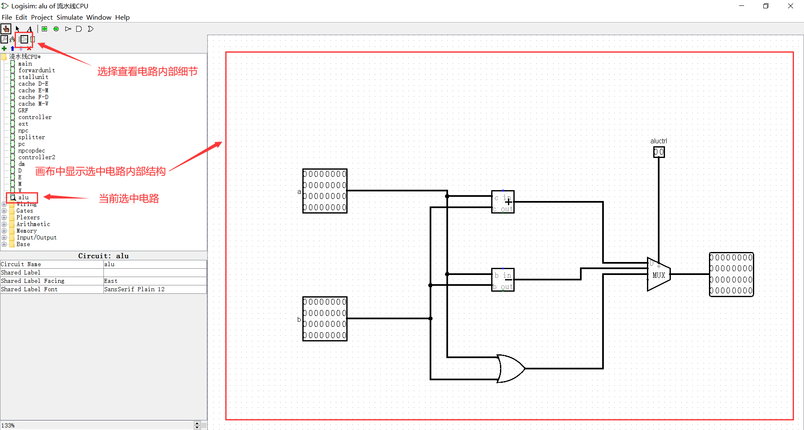
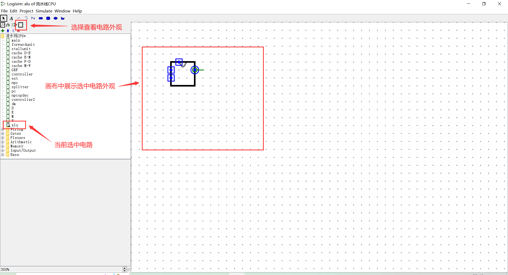
我们在新建一个项目时，logisim会为我们创建一个main电路，这个电路是默认的主电路。我们在资源列表中可以新建子电路，并通过双击来切换当前的选中电路，当前选中的电路上会出现一个"放大镜图标"。如果想在当前选中电路中添加子电路，只需单击资源列表中的对应子电路并在画布中放置。当一个电路作为子电路被添加到另一个电路中时，它在该电路中以电路外观的形式展现。
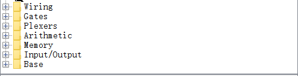
上图对应的部分为logisim为我们的项目自动创建的一些元件，我们可以在Help菜单下的library reference中查看每个元件的具体使用说明。其中建议大家重点了解的元件如下(红色框标出)：
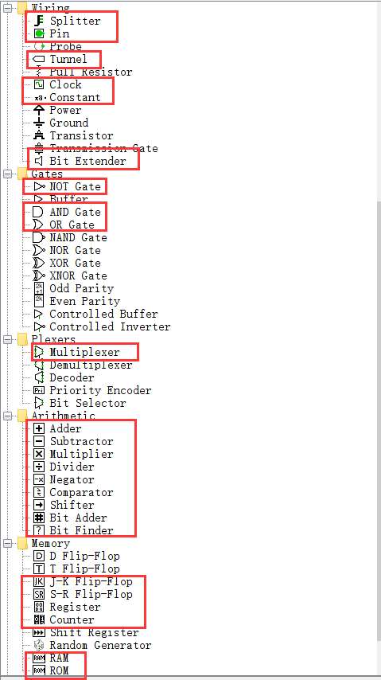
属性面板介绍
当我们在画布中选中一个元件时，我们可以在属性面板中修改它的一些属性。以下图中这个简单的电路为例，当我们选中电路中的这个与门时，我们可以在属性面板中修改它的参数，如朝向、标签内容、大小、输入数据位宽等。
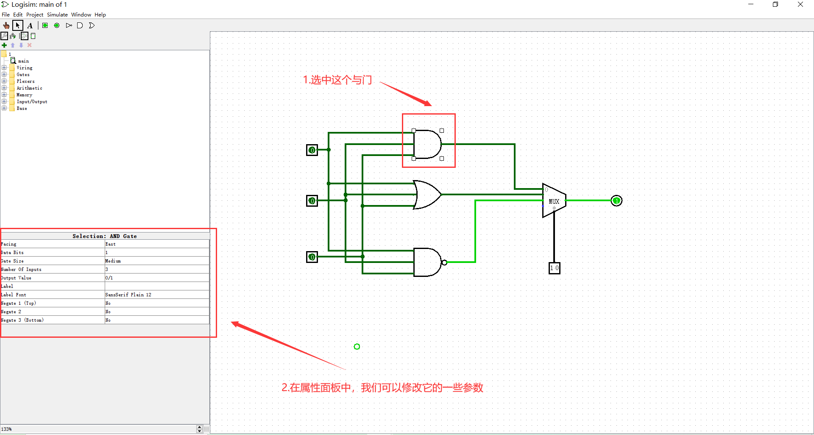
画布介绍
我们在画布中构建电路，想必大家对此处的操作应该没有什么疑问，不过我们可以在此提前了解一下导线颜色代表的不同含义，为之后实验中的debug打点基础
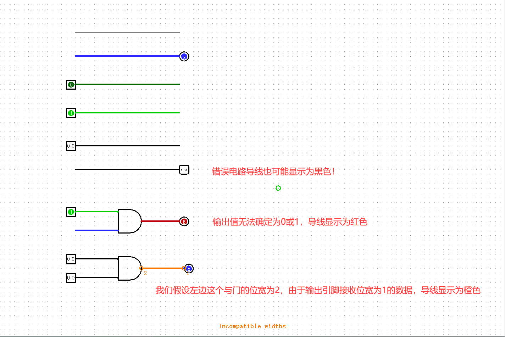
灰色：导线没有连接到任何组件的输入输出，因而位宽未知； 蓝色：导线没有连接任何驱动值；
深绿色：电路携带0值；
亮绿色：电路携带1值；
黑色：导线携带多位值。有些错误的导线也会显示为黑色，大家之后debug可能需要注意一下；
红色：电路携带有错误值。一般情况下，当门电路无法确定它的输出值时，导线显示为红色；
橙色：导线两端位宽不一致。
结语
到此大家应该基本掌握了logisim的一些基本操作，如果认为还有一些你想要了解的操作，可以多阅读一下用户手册（根据助教个人经验，如果只是想了解实验中可能用到的功能，只需阅读到2.8之前的部分即可）。
如果发现了本指导书的错误，或是对某些地方产生疑问，欢迎在计算机硬件基础群中添加助教微信进行反馈。
最后祝大家硬件基础课学习顺利！！！